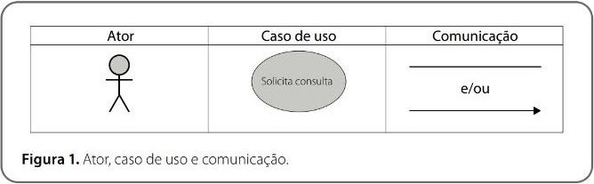
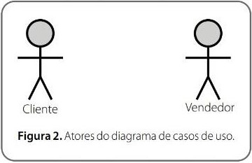
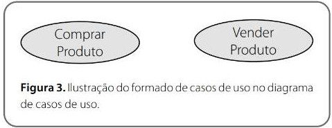
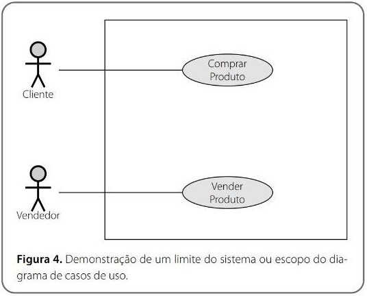
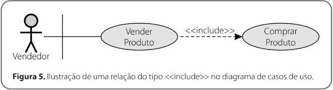
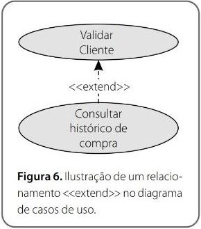
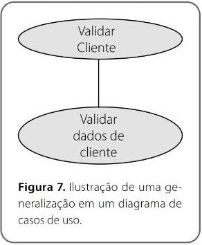
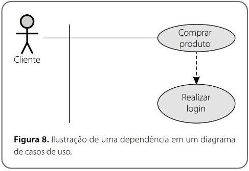

Mapeamento de processos de negócio
Objetivos de aprendizagem
Ao final deste texto, você deve apresentar os seguintes aprendizados:
- Identificar os processos de negócio.
- Mapear os processos AS IS e elaborar o TO BE.
- Aplicar corretamente a notação BPM.
Introdução
Alguma vez você já se perguntou como um produto ou serviço que você consumiu foi produzido? Se sim, você tentou imaginar como foi o processo de criação? Todo produto ou serviço é criado a partir de um processo e, atualmente, as empresas se preocupam muito em entender esse processo e otimizá-los com a ajuda da tecnologia da informação.
Um processo mal elaborado pode causar grandes prejuízos, e em muitos casos, colocar em risco toda uma organização. Imagine uma fábrica de automóveis sem processos de fabricação bem definidos. Os carros produzidos por ela não seriam padronizados, e só neste quesito já geraria a insatisfação dos consumidores/clientes.
Dessa forma, identificar, mapear e otimizar processos é uma tarefa essencial. No contexto de engenharia de software, é muito importante entender sobre processos já que sistemas de informação são grandes aliados da otimização e automatização de processos. Neste texto, você vai aprender a identificar processos, entender mais sobre as técnicas AS IS e TO BE, além de estudar sobre a notação BPM.
Processos de negócio
Muito se fala em "processos de negócio", mas afinal do que se trata? Um processo de negócio pode ser definido como um conjunto de atividades/tarefas estruturadas relacionadas, cujo objetivo é produzir um serviço ou produto especifico. Este produto ou serviço pode ser então ofertado para um cliente específico ou um conjunto de clientes (PAIM et al., 2009). Imagine que você esteja comprando um carro e no momento da compra você reflita sobre todas as etapas e pessoas que foram necessárias para fazer aquele carro chegar até você. Você pode pensar somente no escopo da fábrica de carros. Já pensou quantos procedimentos, atividades e regras foram necessárias para que o produto final fosse criado com sucesso e com a qualidade esperada?
Qualquer empresa ou organização, seja ela pequena ou grande, possui um conjunto de entidades que colaboram e interagem para a entrega de algum produto/serviço. Estas entidades podem ser pessoas, sistemas, máquinas, sensores, departamentos, etc (BECKER; ROSEMANN; VON UTHMANN, 2000). Se analisarmos apenas entidades de departamentos de empresas, podemos eleger um grande número de processos de negócio que ocorrem constantemente. E dentro destas entidades, é necessário que exista um rigoroso controle e uma análise de processos de negócio para evitar esforços desnecessários ou perda de tempo com atividades recorrentes, por exemplo.
Pense que você seja comprador de uma empresa, e que ao realizar um orçamento de um determinado produto para comprar, tenha que cadastrar o fornecedor no sistema. Feito o orçamento com o fornecedor, você aceita realizar a compra do produto e então, para realizar a compra, é necessário realizar novamente o cadastro do fornecedor em outro sistema. Você já pode detectar neste processo um problema, que acaba gerando trabalho duplicado e, obviamente, gerando custos de hora/trabalho para a empresa.
Os processos de negócio são geralmente classificados em três categorias (PAIM et al., 2009). Um dos tipos de processos são os processos primário, também conhecidos como processos finalísticos. Este tipo de processo é aquele processo essencial e que representa as atividades que uma organização desempenha para cumprir sua missão. Pode-se elencar como processos primários a criação de um produto, realização de uma campanha de marketing e qualquer processo cujo receptor da saída seja o cliente do negócio.
Também existem os processos de suporte, que são aqueles processos que oferecem algum auxílio e suportam os processos primários. Ou seja, eles ou facilitam ou viabilizam um contexto para que os processos primários possam ser executados. Podem exemplificar um processo de suporte com processos do RH (recursos humanos) da empresa, processos da TI da empresa (quando não atua no produto final), processos da limpeza e segurança da empresa.
Por fim, você irá conhecer os processos gerenciais, cujo tipo de processo se caracteriza como processos criados para coordenar e controlar as atividades da empresa. Neste tipo de processo, existe a preocupação em gerir melhor, garantir a execução adequada dos processos primários e secundários, traçar planos e garantir o sucesso final. Um exemplo de processos gerenciais são as atividades de gestão empresarial da área de negócio.
Muitas empresas criam muitos processos de negócio ao longo da jornada. Porém, algumas não possuem estes processos documentados e, em muitos casos, não são definidos de forma clara. Uma modelagem nitida destes processos é muito importante para que exista uma alta eficiência na empresa. Se você já viu o filme Titanic, deve saber como um iceberg é perigoso para navios que navegam em oceanos desconhecidos. Geralmente, icebergs exibem apenas 10-15% do total de sua massa. Assim, muitas empresas também possuem icebergs em seu interior, sendo estes os processos de negócio. Essas empresas, que geralmente não conhecem seus processos, possuem o que é caracterizado como visão míope. Ou seja, não possuem a visão real dos processos de negócio e não conhecem o verdadeiro estrago que um processo mal realizado pode causar para a empresa. Imagine a fábrica de carros que foi falada no início desta seção. O que aconteceria se, no processo de fabricação, fosse colocada uma peça errada no motor do carro? Muito provavelmente, depois de fabricar uma quantidade grande de automóveis, haveria a necessidade de manutenção e conserto destes automóveis, causando grandes custos para a empresa.
Desta forma, uma empresa que almeja alcançar o sucesso, bem como os analistas de negócio que desejam ajudar outras empresas a oferecer um produto de qualidade, devem entender como funciona a gestão de processos. O primeiro passo na gestão de processos é justamente identificar processos. Para identificar processos, é preciso antes saber caracterizar um processo. Veja algumas características de processos (OGUNNAIKE; RAY, 1994):
- Processo é uma cooperação de atividades e recursos distintos.
- Processo é voltado à realização de um objetivo global.
- Orientado para o cliente final.
- Reforçado de maneira recorrente.
- A um processo deve corresponder desempenho, organização e responsabilidades.
- Organização estruturada.
- Entradas tangíveis ou intangíveis. [1]
- Saídas como o resultado do processo.
Fique atento
Processos também podem variar de acordo com seu nivel de formalidade. Imagine que um cliente peça um desconto para comprar seu produto em grandes quantidades. Você concede este desconto para o cliente e ele realiza esta grande compra. Embora este processo não seja especificado e descrito, você cria ele de forma informal. Portanto, empresas também possuem processos informais.
Agora que você viu algumas características de um processo, já pode identificá-lo de forma mais fácil. Imagine então que irão ser identificados processos dentro de um departamento de recursos humanos de uma empresa. Podem ser feitas entrevistas e observado o dia a dia no departamento, além de eleitos alguns processos como contratação de profissionais, demissão de funcionários, realização de pagamentos de salários, etc. Todos esses processos possuem um conjunto de atividades que produzem determinado resultado final.
Mapeamento de processos
Agora que você já sabe o que é um processo e como identificá-lo, você irá conhecer mais sobre o mapeamento de processos. Serão abordadas duas técnicas, uma para mapear os processos existentes chamada de AS IS (como é agora). A outra técnica é utilizada para mapear os processos com as melhorias aplicadas, chamada de TO BE (como será).
Técnica AS IS
A técnica AS IS pode ser definida como um trabalho de levantamento e documentação da situação atual do processo, a qual é representada em fluxo ou diagrama. É durante o mapeamento dos processos com esta técnica que levantam-se também os problemas ou fragilidades, e do mesmo modo as oportunidades de melhoria do processo. A forma com que esta técnica é aplicada ocorre geralmente com pessoas que atuam diretamente no processo do dia a dia. Por exemplo, se for um processo de RH, serão realizadas entrevistas, reuniões e acompanhamento dos próprios analistas de RH para entender as etapas do processo. Em alguns casos, participam também clientes e fornecedores, embora a participação de chefias seja evitada (ao menos que seja um processo que os envolve diretamente) (ROSEMANN; BROCKE; HONORATO 2013).
Em relação à profundidade da informação, deve-se tentar extrair o máximo do ator do processo durante o mapeamento. Em alguns casos, é necessário realizar um mapeamento mais detalhado e em outros algo de maior nivel de abstração. No entanto, a técnica orienta que é importante tentar extrair as informações necessárias de uma única vez.
Alguns cuidados devem ser tomados e atividades realizadas quando forem mapear os processos com a técnica AS IS. São eles:
- Sempre fazer a documentação junto aos gestores.
- Conversar com os gestores sobre as melhorias e possíveis ganhos que são esperados.
- Coletar informações sobre expectativas de forma quantitativa sobre o futuro do processo.
- Entender e descrever os objetivos do projeto.
- Definir bem o padrão de notação para o mapeamento. Geralmente o padrão mais adotado é o BPMN (Business Process Model and Notation).
- Definir as ferramentas para modelagem de processos.
- Definição da equipe do projeto.
- Criação de um plano de trabalho e especificação de etapas, responsáveis, recursos e cronogramas.
- Definir priorizações.
- Garantir os recursos necessários.
- Definir como será a comunicação entre a equipe.
Após realizadas as atividades e definidos os principais elementos listados, pode-se iniciar o mapeamento dos processos utilizando uma ou a combinação de técnicas. É possível que sejam realizadas entrevistas com as pessoas envolvidas no processo que é desejado o mapeamento. Assim, elas podem fornecer detalhes sobre o processo e responder questionamentos. Nesta técnica, é importante que seja considerada a possibilidade de se obter apenas o ponto de vista da pessoa entrevistada. Para que não exista somente um viés do ponto de vista do entrevistado, pode-se utilizar a técnica da observação. Na observação, o analista acompanha o processo durante a execução para, a partir da análise, coletar informações e entender como é o fluxo de atividades. Em alguns casos, é necessário aplicar questionários para coletar mais informações sobre o processo. Neste caso, são enviadas questões para os entrevistados preencherem. Uma reunião especial da técnica é chamada de reunião JAD [2] , na qual os representantes envolvidos com o processo fazem uma reunião em um local comum, para a criação da documentação do processo. Esta última técnica é geralmente a que oferece maior rapidez, qualidade e assertividade na documentação do processo.
Durante o mapeamento dos processos, é muito importante que exista um olhar crítico do analista, para identificar problemas que precisam ser resolvidos. Geralmente são identificados problemas relacionados com burocracia, falta de planejamento, atividades inúteis, prazos, riscos, baixo desempenho, altos custos e controles não oficiais da empresa (planilhas paralelas ao sistema).
Técnica TO BE
Agora que você viu como é feito o mapeamento usando a técnica AS IS, irá ser analisada outra técnica que possui como foco as melhorias que são feitas nos processos. Na técnica TO BE, são realizadas discussões, definições e documentação da situação futura do processo a qual é representada em fluxo ou diagrama (também chamado de redesenho ou modelagem). Nesta fase, participam deste trabalho as pessoas que realizam a tarefa no dia a dia, como também os chefes e outras pessoas com experiências que possam enriquecer o processo (ROSEMANN; BROCKE; HONORATO, 2013).
O mapeamento do processo pode ser feito de diversas formas. Tudo depende do cenário e do contexto da corporação. Geralmente são utilizadas as técnicas de entrevista e Reunião JAD. Na técnica TO BE, é importante destacar alguns cuidados e atividades que devem ser realizados.
- Trabalhe em pequenos blocos conforme a priorização.
- Chame para a reunião apenas pessoas que podem melhorar o processo (evitar pessoas apegadas com o processo antigo).
- Evite pensar nas restrições ou limitações, mas sim em como o processo deveria ser.
- Simplifique ao máximo.
- Valide com a alta gestão.
- Crie um plano de implementação das mudanças.
Para identificar locais onde podem ocorrer melhorias em processos, você pode realizar as seguintes perguntas na reunião ou para os entrevistados refletirem:
- O que fazemos que não apresenta valor no processo?
- O que não estamos fazendo, mas apresenta valor no processo?
- O que fazemos pouco mas é esperado mais?
- O que fazemos demais, mas é esperado menos?
- O que pode ser eliminado?
- O que pode ser substituído? O que pode ser adicionado? O que pode ser melhorado? O que pode ser unificado?
- O que pode ser paralelizado para executar mais rápido?
- Com estes questionamentos e a reflexão de todos os envolvidos no processo, é possível que exista um ponto de melhoria para aumentar a produtividade, diminuir os custos e em muitos casos, melhorar o produto final. É importante que tudo seja devidamente documentado, que responsabilidades sejam delegadas e que seja definido um cronograma para implementação.
Notação BPM
A notação BPM, ou também conhecida como BPMN, é amplamente utilizada na modelagem de processos. Ela suporta a capacidade de entendimento de processos de negócio em forma de notação gráfica e também facilita a comunicação e entendimento destes processos com uma única forma de representá-los (PIZZA, 2012). Atualmente, a BPMN está na sua versão 2.0. Nesta seção, serão apresentados alguns elementos principais desta notação. No entanto, a indicação é que você consulte a documentação/especificação completa da notação para conhecer todos os elementos que a compõem, já que em alguns casos, você pode precisar expressar o processo com mais detalhes.
Você encontra as ferramentas de criação de diagramas BPMN acessando o link ou código a seguir:
https://goo.gl/L41PEj
No BPMN o processo de negócio é representado através do encadeamento de eventos/atividades. Estes processos se ligam através de conectores (SILVER; RICHARD, 2009). A Figura 1 apresenta um exemplo de um diagrama com a notação BPMN.
Veja que existem dois painéis que correspondem a diferentes atores do processo. Um para cliente e outro para vendedor. Em cada painel ficam todos os elementos que interagem com o representante. A especificação da BPMN define estes painéis como pools ou lanes. Em seguida, fazendo uma leitura do diagrama da esquerda para a direita, notamos um círculo simples. Ele marca o início de um processo ou sequência de tarefas. Então, uma flecha direciona para a primeira tarefa (task) "Solicita Produto". As tarefas são representadas com retângulos (BUSINESS PROCESS MODEL AND NOTATION, 2009).
Assim que uma tarefa é executada, o fluxo segue para a tarefa seguinte. Você pode verificar que em alguns casos o fluxo vai para um elemento, no formato de losango, chamado Gateway. Este elemento geralmente é um questionamento com duas possíveis respostas: sim e não ou verdadeiro e falso. Cada resposta direciona para um caminho diferente. No exemplo, o vendedor verifica se existe o produto solicitado no estoque. Se existe, ele retorna para o cliente. Se não existe, o processo é finalizado. Por falar em finalizado, note que o último elemento do diagrama também é um círculo. Da mesma forma que um círculo marca o início de um processo, ele também é utilizado para informar o final.
Agora que você viu um exemplo de diagrama BPMN, serão apresentadas as definições formais (BUSINESS PROCESS MODEL AND NOTATION, 2009) de cada elemento do nosso diagrama:
Activities/Tasl: representam um trabalho realizado em uma etapa do processo de negócio.
Sequence Flow: O conector de fluxo de sequência é representado através de uma linha sólida com uma seta preenchida apontando para o destino.
Gateway: Um elemento que utiliza questionamento lógico para decisões de fluxos diferentes no processo.
Além dos elementos apresentados, a especificação BPMN (BUSINESS PROCESS MODEL AND NOTATION, 2009) oferece inúmeros outros elementos que permitem detalhar mais o diagrama. Por exemplo, você pode inserir símbolos nas tarefas para especificar se ela é uma tarefa manual, automática, de usuário ou um script (SILVER; RICHARD, 2009). Também existem ícones para informar tarefas de envio ou espera de mensagens. Por isso, para que você tenha mais opções na hora de criar um diagrama BPMN, é muito importante consultar a especificação atualizada.
Acesse o link ou código a seguir para conhecer a especificação atualizada BPMN:
https://goo.gl/8bfL98
BECKER, J.; ROSEMANN, M.; VON UTHMANN, C. Guidelines of business process mode- ling. In: VAN DER AALST, W.; DESEL, J.; OBERWEIS, A. (Ed.). Business Process Management. New York: Springer Berlin Heidelberg, 2000. p. 30-49.
BUSINESS PROCESS MODEL AND NOTATION (BPMN). Specification 2.0 Vol. V0.9.14 (22 May 2009). Needham: Object Management Group, 2009.
OGUNNAIKE, B. A.; RAY, W. H. Process dynamics, modeling, and control. Oxford: Oxford University Press, 1994.
PAIM, R. et al. Gestão de Processos: pensar, agir e aprender. Porto Alegre: Bookman. 2009. 328 p.
PIZZA, W. R. A metodologia Business Process Management (BPM) e sua importância para as organizações. Monografia (Curso de Tecnologia em Processamento de Dados) - Faculdade de Tecnologia de São Paulo - FATEC SP, São Paulo, 2012.
ROSEMANN, M.; BROCKE, J. V.; HONORATO, B. Manual de BPM: gestão de processos de negócio. Porto Alegre: Bookman, 2013.
SILVER, B.; RICHARD, B. BPMN method and style. Aptos: Cody-Cassidy Press, 2009. v. 2.
Leituras recomendadasDIJKMAN, R. M.; DUMAS, M.; OUYANG, O. Semantics and analysis of business process models in BPMN. Information and Software Technology, Amsterdam, v. 50, n. 12, nov. 2008. p. 1281-1294.
TACHIZAWA, T. Organização flexível: qualidade na gestão por processos. São Paulo: Atlas, 2006.
WHITE, S. A. BPMN modeling and reference guide: understanding and using BPMN. São Paulo: Future Strategies, 2008.
WHITE, S. A. Introduction to BPMN. New York: IBM Cooperation, 2004.
Identificar requisitos funcionais
Objetivos de aprendizagem
Ao final deste texto, você deve apresentar os seguintes aprendizados:
- Descrever o que são requisitos funcionais e suas características.
- Identificar quais são os requisitos funcionais da solução que compõem o escopo.
- Organizar a documentação dos requisitos funcionais.
Objetivos de aprendizagem
Requisitos funcionais podem ser considerados, com toda a segurança, os itens mais importantes durante a modelagem de um produto de software, pois é a partir dos requisitos funcionais que todo o projeto é desenvolvido. Se um requisito funcional não estiver correto, todos os passos posteriores, como modelagem, projeto, desenvolvimento, testes e entrega irão apresentar problemas. Um requisito funcional define uma função particular de um sistema ou algum dos seus componentes; eles representam "o quê o software faz", em termos de tarefas e serviços.
Imagine que um dos requisitos de uma bola seja "a bola deve rolar". Assim, esta é uma característica muito importante para que o produto "bola", ao final do projeto, possa ser útil. Agora, imagine que na coleta de requisitos, o analista não coletou adequadamente este requisito e ao final seja criada uma bola que não role. Se o produto final não atender a esse importante requisito, ele não terá utilidade. O mesmo ocorre em produtos de software. E devido à sua complexidade e, às vezes, falta de conhecimento do usuário, erros são muito comuns na coleta de requisitos. Logo, uma atenção especial e a utilização de boas práticas são essenciais nesta etapa.
Neste texto, você irá conhecer o processo de coleta e documentação de requisitos funcionais. Irá entender o que são requisitos funcionais e suas características. Também irá identificar e documentar estes requisitos.
Requisitos funcionais
A coleta de requisitos é um processo de quatro passos, que inclui o estudo de viabilidade, recolhimento de requisitos, especificação de requisitos de software e validação de requisitos de software. Você vai entender o que significa cada um destes elementos antes de entrar nos conceitos de requisitos funcionais.
Estudo de viabilidade: quando o cliente se aproxima da organização para obter desenvolvido o produto desejado. Ele apresenta uma ideia aproximada sobre o que todas as funções que o software deve executar e quais são todos os recursos esperados. Referindo-se a essa informação, os analistas fazem um estudo detalhado sobre o sistema desejado e se sua funcionalidade é viável para desenvolver (MALL, 2014).
Esse estudo de viabilidade está focado no objetivo da organização, pois analisa se o produto de software pode ser, na prática, materializado em termos de implementação, contribuição do projeto para organização, restrições de custo conforme valores e objetivos da organização. Ele explora os aspectos técnicos do projeto e do produto, como usabilidade, capacidade de manutenção, produtividade e capacidade de integração.
O resultado desta fase deve ser um relatório de estudo de viabilidade, que deve conter comentários adequados e recomendações para o gerenciamento, e se o projeto deve ou não ser realizado.
Coleta de requisitos: se o relatório de viabilidade for positivo para o em- preendimento, a próxima fase começa com os requisitos de coleta do usuário. Analistas e engenheiros se comunicam com o cliente e os usuários finais para conhecer as suas ideias sobre o que o software deve fornecer e quais recursos eles querem que sejam incluídos.
Validação de requisitos de software
Depois que as especificações de requisitos são desenvolvidas, os requisitos mencionados neste documento são validados. O usuário pode solicitar uma solução ilegal, impraticável ou os especialistas podem interpretar incorretamente os requisitos. Isso resulta em um enorme aumento no custo, se não for examinado. Os requisitos podem ser verificados em relação às seguintes condições (MALL, 2014):
- Se eles podem ser, na prática, implementados.
- Se eles são válidos e de acordo com a funcionalidade e o domínio do software.
- Se há ambiguidades.
- Se estão completos.
- Se podem ser demonstrados.
Processo de elicitação de requisitos
O processo de elicitação de requisitos pode ser representado pelo diagrama, conforme a Figura 2:
- Coleta de requisitos: os desenvolvedores discutem com o cliente e os usuários finais, e conhecem as suas expectativas sobre o software.
- Organização de requisitos: os desenvolvedores priorizam e organizam os requisitos por ordem de importância, urgência e conveniência.
- Negociação e discussão: se os requisitos são ambíguos ou existem alguns conflitos em requisitos de várias partes interessadas, é negociado e discutido com essas partes. Assim, os requisitos podem, então, ser priorizados e razoavelmente comprometidos, pois, provêm de vários partes interessadas. Para remover a ambiguidade e os conflitos, eles devem ser discutidos com clareza e exatidão, já que os requisitos irrealistas comprometem essa etapa.
- Especificação: todos os requisitos formais e informais, funcionais e não funcionais são documentados e disponibilizados para o próximo processamento da fase.
Técnicas de elicitação de requisitos
A elicitação de requisitos é o processo para descobrir os requisitos para um sistema de software pretendido, comunicando-se com o cliente, usuários finais, usuários do sistema e outros que tenham participação no desenvolvimento do sistema de software.
Existem várias maneiras de descobrir os requisitos (SCHACH, 2009):
- Entrevistas: as entrevistas são um meio forte para cobrar os requisitos. A organização pode realizar vários tipos de entrevistas, tais como:
- Entrevistas estruturadas (fechadas), em que cada informação é única para coletar dados, sendo decidida com antecedência, porque elas seguem um padrão e a questão de discussão firmemente.
- Entrevistas não estruturadas (abertas), em que a informação a reunir não é decidida com antecedência, mais flexível e menos tendenciosa.
- Entrevistas orais.
- Entrevistas escritas.
- Entrevistas individuais que são realizadas entre duas pessoas em todo o país.
- Pesquisa: a organização pode realizar pesquisas entre várias partes interessadas, que consultarão sobre as expectativas e os requisitos do próximo sistema.
- Questionário: o documento, com um conjunto pré-definido de questões objetivas, é entregue a todas as partes interessadas para ser respondido, assim, posteriormente, serão coletadas e compiladas as respostas. Uma lacuna dessa técnica é, se uma opção para algum problema não for mencionada no questionário, a questão pode ser deixada sem supervisão. Análise de tarefas: a equipe de engenheiros e desenvolvedores pode analisar a necessidade da operação do novo sistema. Se o cliente já tiver algum software para executar determinada operação, ele é estudado e os requisitos do sistema proposto são coletados.
- Análise de domínio: todo o software cai em alguma categoria de domínio. As pessoas experientes no domínio podem ser de grande ajuda para analisar os requisitos gerais e específicos.
- Debate: um debate informal é realizado entre as várias partes interessadas e todos os seus insumos são registrados para análise adicional de requisitos.
- Prototipagem: é a construção de uma interface de usuário, sem adicionar funcionalidades detalhadas para que o usuário interprete os recursos do produto de software pretendido. Isso ajuda a dar uma melhor ideia a respeito dos requisitos. Se não houver nenhum software instalado no trabalho final do cliente, para a referência do desenvolvedor, e o cliente não estiver ciente de seus próprios requisitos, o desenvolvedor criará um protótipo com base em requisitos inicialmente mencionados. O protótipo é mostrado ao cliente e o feedback é anotado. Ele serve como uma entrada para a coleta de requisitos.
- Observação: a equipe de especialistas visita a organização ou o local de trabalho do cliente. Eles observam o funcionamento real dos sistemas existentes, também analisam o fluxo de trabalho final do cliente e como os problemas de execução são tratados. A equipe em si desenha algumas conclusões que ajudam a formar os requisitos esperados do software.
Características de requisitos de software
Coletar os requisitos de software é a base de todo o projeto do seu desenvol- vimento. Portanto, eles devem ser claros, corretos e bem definidos. Uma especificação completa de requisitos de software deve ser:
- Clara Correta
- Consistente
- Coerente
- Compreensivel
- Modificável
- Verificável
- Sem ambiguidade
- Rastreável
- Fonte credivel
- Requisitos de software
Os requisitos funcionais podem ser cálculos, detalhes técnicos, manipulação e processamento de dados, além de outras funcionalidades específicas que definem o que um sistema deve realizar. Os requisitos comportamentais, que descrevem todos os casos em que o sistema usa os requisitos funcionais, são capturados em casos de uso. Os requisitos funcionais são suportados por requisitos não funcionais (também conhecidos como requisitos de qualidade), que impõem restrições ao projeto ou implementação (como requisitos de desempenho, segurança ou confiabilidade). Geralmente, os requisitos funcionais são expressos na forma "o sistema deve fazer <requisição>", enquanto os requisitos não funcionais são "o sistema deve ser <requisito>". O plano para implementar requisitos funcionais é detalhado no design do sistema. O plano de implementação de requisitos não funcionais é detalhado na arquitetura do sistema (LAPLANTE, 2013).
Conforme definido na engenharia de requisitos, os requisitos funcionais especificam resultados de um sistema. Isso deve ser contrastado com requisitos não funcionais que especificam características gerais, como custo e confiabilidade. Os requisitos funcionais conduzem a arquitetura de aplicativos de um sistema, enquanto os requisitos não funcionais conduzem a arquitetura técnica de um sistema (WIEGERS; BEATTY, 2013).
Em alguns casos, um analista de requisitos gera casos de uso após reunir e validar um conjunto de requisitos funcionais. A hierarquia dos requisitos funcionais é: solicitação do usuário / stakeholder → recurso→ use case → business rule. Cada caso de uso ilustra cenários comportamentais por meio de um ou mais requisitos funcionais. Muitas vezes, um analista começará provocando um conjunto de casos de uso, dos quais ele pode derivar os requisitos funcionais que devem ser implementados para permitir que um usuário execute cada caso de uso.
Os requisitos, que estão relacionados ao aspecto funcional do software, se enquadram nesta categoria. Eles definem funções e funcionalidades dentro e a partir do sistema de software.
Analise alguns exemplos de requisitos funcionais:
- Opção de pesquisa fornecida ao usuário para pesquisar de várias faturas. O usuário deve enviar qualquer relatório para o gerenciamento.
- Os usuários podem ser divididos em grupos e os grupos podem receber direitos separados.
- Deve cumprir regras de negócios e funções administrativas.
- O software é desenvolvido mantendo a compatibilidade descendente intacta.
Pode-se dividir os requisitos de acordo com o escopo ao qual eles fazem parte. Em muitos projetos, os requisitos são obtidos de forma conjunta, sem uma classificação. A fase de organização é essencial para permitir a separação de acordo com determinadas partes de um sistema. Você verá alguns exemplos de escopos e seus requisitos.
Requisitos de interface
- O campo 1 aceita a entrada numérica de dados.
- O campo 2 apenas aceita datas antes da data atual.
- A tela 1 pode imprimir dados na tela para a impressora.
Requisitos de negócio
- Os dados devem ser inseridos antes que um pedido possa ser aprovado.
- Ao clicar no botão aprovar, mova a solicitação para o fluxo de trabalho de aprovação.
- Todo o pessoal que estiver usando o sistema será treinado de acordo com o SOP interno AA-101.
Requisitos de regulamentação/conformidade
- O banco de dados terá uma trilha de auditoria funcional.
- O sistema irá limitar o acesso a usuários autorizados.
- A planilha pode proteger dados com assinaturas eletrônicas.
Requisitos de segurança
- Os membros do grupo de entrada de dados podem inserir solicitações, mas não podem aprovar ou excluir solicitações.
- Os membros do grupo gerentes podem inserir ou aprovar um pedido, mas não podem excluir solicitações.
- Os membros do grupo administradores não podem entrar ou aprovar pedidos, mas podem excluir pedidos.
Especificação de requisitos funcionais
Uma especificação de requisitos de software (SRS) é uma descrição de um sistema de software a ser desenvolvido. Ele estabelece requisitos funcionais e não funcionais e pode incluir um conjunto de casos de uso que descrevem as interações do usuário que o software deve fornecer.
A especificação de requisitos de software estabelece a base de um acordo entre clientes e contratados ou fornecedores (em projetos orientados para o mercado, essas funções podem ser desempenhadas pelas divisões de marketing e desenvolvimento) sobre o que o produto de software deve fazer, bem como, o que não é esperado que façam. A especificação de requisitos de software permite uma avaliação rigorosa dos requisitos antes que o projeto possa come- çar e reduz o redesenho posterior. Também, deve fornecer uma base realista para estimar os custos, os riscos e os horários dos produtos. Usado de forma adequada, as especificações de requisitos de software podem ajudar a evitar falhas no projeto (PRESSMAN, 2016).
O documento de especificação de requisitos do software lista requisitos suficientes e necessários para o desenvolvimento do projeto. Para derivar os requisitos, o desenvolvedor precisa ter uma compreensão clara e completa dos produtos a serem desenvolvidos ou em desenvolvimento. Isso é alcançado e refinado com comunicações detalhadas e contínuas com a equipe do projeto e o cliente, até a conclusão do software.
O SRS pode ser uma das descrições de itens de dados entregues por contrato ou ter outras formas de conteúdo com mandato organizacional.
No documento de especificação de requisitos, há uma seção especial em que são colocados os requisitos funcionais. Nessa seção, além de uma abertura que introduz o contexto dos requisitos, tem-se todos os requisitos descritos na Figura 3:
[RF001] <Nome do requisito funcional>
<Opcional-forneça uma pequena explicação do propósito do requisito funcional (útil quando o nome do requisito funcional não deixa suficientemente claro qual é o seu objetivo) e o(s) seu(s) respectivo(s) ator(es).>
Ator: <informe o(s) ator(s) do requisito funcional.>
Prioridade: Essencial / Importante / Desejável
Interface(s) associada(s) <Opcional>: <inclua aqui o(s) identificador(es) da(s) respectiva(s) interface(s) do requisito funcional.>
Entradas e pré-condições: <liste aqui todas as entradas e/ou pré-condições do requisito funcional. Pré-condição de um requisito funcional é o estado em que o sistema deve estar para realizar o requisito funcional.>
Saídas e pós condições: <liste aqui todas as saídas e/ou pós condições do requisito funcional. Pós-condição de um requisito funcional é a lista de possíveis estados em que o sistema pode estar imediatamente após o término da realização do requisito>
Além da descrição dos requisitos funcionais, em alguns casos, é comum a aparição de diagramas de casos de uso ou de processos para facilitar o entendimento dos requisitos pelas pessoas que estão envolvidas no projeto.
Saiba mais
Para você ver mais um exemplo de solução de problemas e melhoria de processos, leia o artigo "Proposta de melhoria do processo de uma fábrica de polpas por meio da metodologia de análise e solução de problemas" (SOUSA et al., 2015).
PRESSMAN, R. S.; MAXIM, B. R. Engenharia de software: uma abordagem profissional. 8. ed. Porto Alegre: AMGH, 2016.
SCHACH, S. Engenharia de Software: os paradigmas clássico e orientado a objetos. 7. ed. Porto Alegre: McGraw-Hill, 2009.
WIEGERS, K.; BEATTY, J. Software requirements. 3. ed. London: Pearson Education, 2013.
Leituras recomendadas
GONÇALVES, L. C. Engenharia de Requisitos. Semeru Blog, 2013. Disponível em: <http:// www.semeru.com.br/blog/engenharia-de-requisitos/>. Acesso em: 14 set. 2017.
VENTURA, P. O que é Requisito Funcional. Até o momento, Belo Horizonte, 2017. Disponível em: <http://www.ateomomento.com.br/o-que-e-requisito-funcional/>. Acesso em: 14 set. 2017.
Identificar requisitos não funcionais
Objetivos de aprendizagem
Ao final deste texto, você deve apresentar os seguintes aprendizados:
- Descrever o que são requisitos não funcionais e suas características. Identificar quais são os requisitos não funcionais da solução que compõem o escopo.
- Organizar a documentação de requisitos não funcionais.
Introdução
Requisitos não funcionais são as características e aspectos internos do sistema, que envolvem, especificamente, a parte técnica. Ao contrário dos requisitos funcionais, esses requisitos não são explicitamente expostos pelo cliente, mas devem ser subentendidos pelo desenvolvedor. Nesse tipo de requisito, consegue-se garantir que um sistema realize as ações explícitas nos requisitos funcionais da melhor forma possível, evitando possíveis problemas, como por exemplo, baixo desempenho, defeitos e erros.
Neste texto, você vai estudar sobre os requisitos não funcionais, a partir de conceitos e exemplos básicos. Além disso, você verá como identificar e documentar os requisitos não funcionais.
Requisitos não funcionais
Na engenharia de sistemas e de requisitos, um requisito não funcional (NFR) é um requisito que especifica critérios que podem ser usados para julgar o funcionamento de um sistema e não comportamentos específicos. Eles são contrastados com os requisitos funcionais, que definem comportamentos ou funções específicas. O plano para implementar requisitos funcionais é detalhado no design do sistema. Assim, esse plano para a implementação de requisitos não funcionais é detalhado na arquitetura do sistema, porque eles, geralmente, são requisitos significativos de forma arquitetônica (CHUNG, 2012).
Em geral, os requisitos funcionais definem o que um sistema deve fazer e os requisitos não funcionais definem como um sistema deve ser. Os requisitos funcionais, geralmente, são na forma de (o sistema deve fazer <requisito>) uma ação individual de parte do sistema, talvez, explicitamente, no sentido de uma função matemática, uma descrição de caixa preta, uma saída, um processo ou um modelo funcional de controle ou modelo IPO. Em contrapartida, os requisitos não funcionais estão na forma de (o sistema deve ser
Os requisitos não funcionais são chamados de atributos de qualidade de um sistema. Outros termos para requisitos não funcionais são qualidades, objetivos de qualidade, requisitos da qualidade de serviço, restrições e requisitos não comportamentais. Informalmente, podem, também, serem chamados de qua- lidades, de atributos, como estabilidade e portabilidade. As qualidades - que são os requisitos não funcionais - podem ser divididas em duas categorias principais (CHUNG, 2012):
- Qualidades de execução: como segurança e usabilidade, que são observáveis durante a operação (em tempo de execução).
- Qualidades de evolução: como testabilidade, capacidade de manutenção, extensibilidade e escalabilidade, incorporadas à estrutura estática do sistema.
Exemplos de requisitos por domínio
Pode-se classificar os domínios dos requisitos não funcionais em precisão, adaptabilidade, estética, configuração, consistência, documentação, extensibili- dade, frequência, fatores humanos, instabilidade, localizabilidade, manutenção, portabilidade, previsibilidade, recuperabilidade, confiabilidade, consumo de recursos, tempo de resposta, e reutilização (GLINZ, 2007). Você vai, a seguir, ver alguns exemplos de sistemas diversos de requisitos não funcionais divididos pelas suas características de qualidade.
Precisão
- Cada chamada telefônica, iniciada pelo discador automático, deve ter todos os dígitos exatamente corretos, incluindo o código de área. As notas calculadas devem ser precisas para 1%.
- O sistema notificará o administrador do sistema, caso a fonte de dados de entrada estiver corrompida.
- Todo vídeo deve ter uma identificação única.
Adaptabilidade
- O software acabado deve suportar novos tipos de funcionários sem precisar ser reescrito ou recompilado.
- O software deve ser flexível.
- O software deve ser adaptável.
Estética
- Todo o texto deve ser rosa.
- O usuário deve estar satisfeito com a aparência da GUI. Compatibilidade.
- Todos os programas do cliente web devem interagir com o servidor sem alterações no código do servidor.
Configuração
- O sistema deve usar um arquivo java .properties que contém pares de valores chave que definem o driver jdbc para usar.
- O sistema deve se adaptar às mudanças em qualquer formato de registro de entrada, sem a necessidade de recompilar qualquer código.
Consistência
- É necessária uma GUI consistente.
Documentação
- Toda a documentação do sistema deve ser incorporada ao código-fonte.
- O código-fonte deve ser autodocumentado, colocando-se a descrição do design em um cabeçalho de método legível: Javadoc.
Extensibilidade
- Se o formato de dados de entrada muda, o desenvolvedor poderá fazer as mudanças necessárias.
- Um novo formato de arquivo pode ser adicionado ao sistema sem alterar nenhum arquivo .class existente.
Frequência/gravidade da falha
- O sistema falhará mais de uma vez para cada 10.000 transações.
- Não pode haver exceções não tratadas de entrada de usuário incorreta.
Fatores humanos
- A IU deve ser fácil de usar.
- A interface do usuário deve ser intuitiva.
- Todos os menus devem ter um formato consistente.
Instabilidade
- Deve ser possível criar e preencher o banco de dados a partir de um arquivo de script.
- Um usuário pode instalar e operar o programa sem qualquer tipo de assistência.
- Deve haver um programa de instalação.
- O processo de instalação será mantido no mínimo.
Localizabilidade
- Deve ser possível operar o sistema em qualquer idioma.
- Todos os componentes da interface do usuário devem suportar a localidade do sistema.
- Se uma localidade não estiver disponível, o US English deve ser usado.
- A linguagem UI pode ser trocada de inglês para alemão, sem recompilar nem reconstruir o programa.
- O produto pode alternar entre unidades inglesas e métricas, sem recompilar nem reconstruir o programa.
Manutenção
- Um desenvolvedor de software com seis meses de experiência poderá corrigir qualquer defeito conhecido.
- O grupo de manutenção deve ser capaz de manter o software.
- Tempo médio de mudança para defeitos deve ser menor que dois dias.
Portabilidade
- O sistema será executado, sem modificação, em qualquer plataforma de destino Java.
- O sistema não é portátil.
- Qualquer navegador da web habilitado para Java deve poder acessar os dados do sistema.
Previsibilidade
- O sistema nunca pode falhar.
- O sistema deve produzir resultados previsíveis.
Recuperabilidade
- Durante um reinício do sistema, ele retornará a um estado de funcionamento.
Confiabilidade
- O sistema estará disponível 100% do tempo.
- O sistema nunca deve falhar.
Consumo de recursos
- O sistema deve consumir um máximo de 1 GB de memória.
- O sistema não usará mais de 25% dos recursos do sistema.
Tempo de resposta
- O tempo de resposta da consulta deve ser rápido.
- Todas as consultas devem retornar uma resposta em período inferior a 2 segundos.
Reutilização
- Todas as transações devem ser criptografadas.
- Somente o professor pode modificar notas.
Identificação dos requisitos não funcionais
A identificação de requisitos não funcionais é uma etapa bastante complexa da modelagem de um sistema, já que muitas vezes é necessário conhecer as tecnologias envolvidas na resolução dos problemas. Enquanto requisitos funcionais apresentam o que o sistema fará, os requisitos não funcionais apresentam como este sistema irá atender aos requisitos funcionais. Logo, se deve fazer a ligação entre os requisitos funcionais e as possíveis soluções que permitem o atendimento deles (CHUNG; LEITE, 2009).
É possível imaginar a criação de um jogo de corrida para computador. Após o levantamento dos requisitos funcionais (por exemplo, o jogo deve permitir ao jogador controlar o automóvel e o jogo ser multiplayer), deve-se fazer o levantamento dos requisitos não funcionais. Para isso, é necessário perguntar: o que o sistema precisa ter para permitir os requisitos funcionais?
Você verá abaixo uma lista de possíveis requisitos não funcionais para o exemplo do jogo de corrida:
- Pode ser executado em qualquer sistema operacional.
- Precisa do último JRE (Java Runtime) instalado para executar o projeto.
- A senha deve ser criptografada por segurança.
- O software deve ser executado em qualquer navegador.
- O site deve ser acessado a partir de qualquer local com acesso à internet.
- Precisa executar no site para acesso universal.
- O software deve ser confiável e não falhar.
- Deve estar livre de defeitos.
- Precisa falhar menos de uma vez por semana.
- O usuário tem uma senha para que nenhum outro usuário possa mexer no seu jogo.
- Precisa usar requisitos mínimos de sistema/hardware.
- O software deve ser intuitivo ou facilmente compreendido depois de se ler as regras.
- Precisa de um layout confortável que acolha novatos e veteranos.
- O layout deve ser autoexplicativo, suficiente para que qualquer usuário não precise acessar ao manual três vezes para entender as funções do produto.
Após olhar esses requisitos, se pode constatar que eles estão mais próximos das tecnologias que serão utilizadas do que de aspectos característicos do pro- duto final e serviços. Portanto, elenca-se as seguintes etapas da identificação de requisitos não funcionais:
- A partir dos requisitos funcionais, fazer o questionamento: o que o sistema deve ter para satisfazer este requisito?
- Validar requisito não funcional.
- Documentar.
Especificação e documentação
Assim como na especificação de requisitos funcionais, os requisitos não funcionais são descritos no documento de Especificação de Requisitos de Sof- tware (SRS). Nele, há uma seção especial para esses requisitos não funcionais. De forma geral, eles são descritos com o uso de uma escrita contínua ou de tabelas (EELES, 2005). Veja no Quadro 1, um exemplo de uma especificação de requisitos.

Nesta especificação, tem, basicamente, o identificador do requisito não funcional, iniciado por RNF e uma numeração. A seguir, informa-se uma categoria do requisito. Além disso, há o nome e a descrição que informam os detalhes do requisito não funcional. Também, se tem informações adicionais, como a data de criação, a última alteração, o autor, a versão e as prioridades.
CHUNG, L. et al. Non-functional requirements in software engineering. New York: Springer Science & Business Media, 2012. (International Series in Software Engineering, 5).
CHUNG, L.; LEITE, J. C. S. P. On non-functional requirements in software engineering. In: BORGIDA, A. T. et al. (Ed.). Conceptual modeling: foundations and applications. Berlin: Springer-Verlag, 2009. p. 363-379.
EELES, P. Non-functional requirements. New York: IBM Software Group, 2005.
GLINZ, M. On non-functional requirements. In: IEEE INTERNATIONAL REQUIREMENTS ENGINEERING CONFERENCE RE'07. 15., New Delhi, 2007.Proceedings...Los Alamitos: IEEE Computer Society, 2007.
Leitura recomendada
SLACK, N.; CHAMBERS, S.; JOHNSTON, R.; BETTS, A. Gerenciamento de operações e de processos: princípios e práticas de impacto estratégico. 2. ed. Porto Alegre: Bookman, 2013.
Documentar a visão do projeto
Objetivos de aprendizagem
Ao final deste texto, você deve apresentar os seguintes aprendizados:
- Delimitar o escopo da solução.
- Documentar a visão do projeto.
- Identificar as premissas e restrições da solução.
Introdução
Neste capítulo, você irá aprender sobre a fase de visão do projeto. Na etapa inicial de um projeto, define-se quais serão os princípios norteadores de todo o trabalho que será realizado, como os objetivos e, em alguns casos, o orçamento do projeto. Por isso, é importante que exista uma forte sinergia entre o time que irá conduzir o projeto e os stackeholders.
Para que você entenda bem cada passo a ser realizado durante o processo, você irá, antes de tudo, estudar sobre o escopo da solução. A partir desse estudo, você vai entender como analisar o ambiente para o qual a solução será criada e quais elementos que estão relacionados a ele. Além disso, você vai aprender sobre visão do projeto: como analisar informações e quais as técnicas utilizadas para extrair informações e documentar a visão do projeto. Por fim, você vai conhecer as premissas e restrições, o que define claramente o que será, deverá ou poderá ser feito durante ou após o projeto.
Escopo da solução
Antes de iniciar qualquer projeto de software, devemos definir bem qual é o escopo do que será criado. Na definição de escopo, geralmente, são levantados alguns casos de uso, em que o gerente de projetos deve utilizar a técnica conhecida pelos questionamentos: Quem? O quê? Quando? Como? Onde? Por quê?
Com estas perguntas realizadas a respeito do sistema, dificilmente ficarão dúvidas quanto ao escopo do projeto, já que elas tentam induzir o gerente de projetos a pensar em todo o processo de uso e interação que o software terá com o mundo real. Por exemplo, veja no Quadro 2 como são feitos os questionamentos para fazer o levantamento de escopo de uma aplicação real para celulares.

No Quadro 2, você viu duas situações realizadas pelo usuário para a execução de uma aplicação no celular. Em um grande projeto, esse quadro teria diversas linhas, já que possivelmente teria diversos atores interagindo com o software e realizando diferentes ações de maneiras, lugares e motivos diferentes.
Fique atento
É muito importante que a definição de um escopo de projeto seja realizada de forma adequada, para evitar expectativas superiores ao produto entregue, custos além do previsto e atrasos na entrega do produto final.
Não apenas a interação com os atores é prevista em uma definição de escopo, mas também, diversos outros fatores que o software influencia ou é influenciado, como programas, projetos, aplicativos e processos de negócios que o projeto está associado. Além disso, o escopo inclui outras situações que afete ou influencie o software. Dessa forma, quando temos um escopo razoavelmente definido e uma análise de negócio realizada, podemos partir para a etapa de levantamento e definição da visão do projeto.
Visão do projeto
A visão do projeto possui como principal objetivo descrever o escopo de forma preliminar, com os objetivos, metas e, também o motivo e justificativa pelos quais o projeto será desenvolvido. A visão do projeto é definida utilizando-se um artefato chamado de documento de visão do projeto (JURISON, 1999). Embora, alguns dos princípios do manifesto ágil sejam de tentar evitar a documentação demasiada em projetos de software, o documento de visão é bem visto e bastante utilizado em projetos com metodologias eficientes, pois ele define uma série de questões que são necessárias para as boas práticas ágeis, como por exemplo, o dono do produto (também chamado de Product Owner), declaração de abertura do projeto, assim como o orçamento (DYBA; DINGSØYR; MOE, 2014).
Durante a etapa de criação do documento de visão de projetos, são utilizadas diversas ferramentas para extrair as informações necessárias e permitir a tomada de decisão sobre o que será definido. Entre as ferramentas, geralmente são adotadas as famosas reuniões com stakeholders, as sessões JAD, a análise SWOT e a análise GAP (LEON, 2015). Você irá conhecer alguns destes itens utilizados para o levantamento das informações. Mas antes, é importante ter uma projeção de quais são as informações de entrada do processo de definição de visão de projeto e quais são as principais saídas, ou seja, o que é definido com este documento (DYBA; DINGSØYR; MOE, 2014).
De forma geral, se tem como entrada do processo de criação da visão do projeto os seguintes itens:
- Caso de negócio do projeto: os casos de negócio são geralmente obtidos através de uma análise de negócio, onde são identificados processos e melhorias. Esta é uma entrada obrigatória para a definição da visão do projeto.
- Dono do produto do programa: esta é a pessoa que vai organizar o que precisa ser feito/criado durante o projeto. Ela estará envolvida diretamente com o produto que está sendo criado e deve conhecer profundamente as necessidades do produto e do cliente.
- Scrum master do programa: este papel é adotado em projetos Scrum, em que a pessoa coordena e organiza as práticas Scrum dentro do time de desenvolvimento.
- Stakeholder(s) do programa: a participação dos stakeholders do projeto é muito importante para a definição da visão. Eles irão apresentar as necessidades, as restrições e aceitar ou não o documento, na maioria dos casos.
- Dono do produto chefe: em projetos grandes, onde temos diversos times scrum trabalhando, cada qual com um scrum master, deve existir um dono do produto chefe ou scrum master chefe.
- Backlog do produto do programa: precisamos também da lista de necessidades do produto que será desenvolvido. É no backlog que ficam listados os requisitos que deverão ser observados e trabalhados.
- Visão da empresa: a visão da empresa/cliente é essencial para que a visão do projeto seja definida, pois as duas devem caminhar juntas.
- Missão da empresa: assim como a visão da empresa, a missão também é importante, pois facilita a criação da visão do projeto.
- Estudo de mercado: em alguns casos, é interessante existir um estudo de mercado. Assim, a visão pode ser alinhada de forma a contribuir para o sucesso da empresa/cliente, considerando-se o escopo mercadológico.
Já como saída do processo de definição da visão do projeto, temos os seguintes itens:
- O dono do produto (ou Product Owner) é identificado.
- Declaração da visão do projeto.
- Termo de abertura do projeto.
- Orçamento do projeto.
Agora que você já viu os fatores/itens necessários para iniciar a visão do projeto, bem como, o que é definido e produzido durante essa etapa, você vai conhecer as principais ferramentas utilizadas para extrair estas informações. Foram citadas, anteriormente, as sessões JAD, a análise SWOT e a análise GAP. Você verá o que significa cada uma delas:
Sessões JAD: JAD (do inglês, Joint Application Design) é uma técnica para a coleta de requisitos e entendimento do escopo, do objetivo e do propósito de um projeto. São basicamente reuniões realizadas com um facilitador, um escrivão e demais participantes. O facilitador faz o levantamento de tópicos para a discussão, enquanto o escrivão registra os pontos mais importantes (LEON, 2015).
Análise SWOT: identifica as forças, as fraquezas, as oportunidades e as ameaças relacionadas ao projeto (LEON, 2015). No Brasil, você pode se deparar com a mesma técnica com outro nome, já que a técnica foi traduzida para a Matriz FOFA. Veja com mais detalhes na Figura 3:

Link
Acesse o link ou utilize o código a seguir para assistir um vídeo explicativo sobre a Análise SWOT.
Com a análise SWOT, consegue-se eleger os fatores internos e externos que podem afetar o projeto de forma negativa e positiva. Com essa análise, você pode traçar melhores decisões para evitar problemas no projeto.
Outra técnica bastante utilizada durante a criação e definição do documento de visão é a Análise GAP. Nessa análise, são realizadas as seguintes perguntas: onde quero chegar e o que preciso para chegar onde quero? Com isso, é possível traçar e definir o que é preciso para atingir os objetivos utilizando o que existe disponível? Na análise GAP, o foco são os recursos que você ainda não tem (LEON, 2015). Por exemplo, se você deseja chegar ao outro lado de uma lagoa, mas não possui uma canoa. Então, o seu projeto poderia muito bem ser o de uma canoa, não?
Por fim, é realizada a criação do documento de visão do projeto. Basicamente, esse documento pode seguir o seguinte roteiro, mas estes itens não são fixos, podem ser alterados de acordo com o projeto:
- Introdução
- Posição
- Descrições da parte interessada e do usuário
- Visão geral do produto
- Recursos do produto
- Restrições
- Faixas de qualidade
- Precedência e prioridade
- Outros requisitos do produto
- Requisitos de documentação
Nesta seção, você viu os itens de entrada, de saída e algumas técnicas utilizadas na criação do documento de visão do negócio. Veja a seguir as premissas e restrições, itens importantes do documento de visão do projeto.
Premissas e restrições
Muitos profissionais na hora de criar o documento de visão de projeto, acabam se equivocando em diferenciar o que são as premissas e as restrições. Em muitos casos, esses itens são dispostos de forma errada no documento. Mas, você irá aprender como diferenciá-las!
Basicamente, premissas são hipóteses e restrições são deveres. Para entender melhor como definir as premissas e as restrições, deve ter se pergun- tado: quem está trabalhando está localizado internamente ou externamente no projeto?
Para que você compreenda bem a diferença entre estes dois itens, será utilizado o exemplo de que haverá um grande show de rock de uma banda famosa. Foi colocado um globo de cristal no meio do palco, que ao meio dia será iluminado com a luz do sol e irá refletir para o público luzes coloridas. Como esse acontecimento necessita de um fator externo, que não é controlável, pode-se definir a seguinte premissa:
A luz solar, ao meio dia, será refletida pelo globo de cristal para o público.
Desta forma, uma premissa é algo que pode ocorrer, mas não é possível garantir. Logo, na descrição de uma premissa, não podemos utilizar palavras como "deve" (JURISON, 1999). Um exemplo de premissa errada, seria a seguinte:
A luz solar deverá ser refletida ao meio dia pelo globo de cristal para o público.
Já as restrições são elementos que impõem limitações e podem ser internos ou externos da equipe de criação. Quando é criado um software, geralmente, é criado um contrato. Neste caso, poderiam ser vistas as cláusulas do contrato como restrições (STELLMAN; GREENE, 2005). No exemplo do show de rock, uma restrição que seria criada é:
Todos os integrantes da banda deverão vestir roupas na cor preta.
Ou seja, existe uma restrição para que o show aconteça, em que os integrantes deverão vestir roupas na cor determinada. Por fim, vale lembrar que as premissas e restrições devem estar descritas nos documentos de termo de início, declaração de escopo e visão do projeto.
Exemplo
Para você ver mais um exemplo de solução de problemas e melhoria de processos, leia o artigo "Proposta de melhoria do processo de uma fábrica de polpas por meio da metodologia de análise e solução de problemas" (SOUSA et al., 2015).
Referências
DYBA, T.; DINGSØYR, T.; MOE, N. B. Agile project management. In: RUHE, G.; WOHLIN, C. (Ed.). Software project management in a changing world. Heidelberg: Springer Berlin, 2014. p. 277-300.
JURISON, J. Software project management: the manager's view. Communications of the A/S, Atlanta, v. 2, 1999.
LEON, A. Software configuration management handbook. 3. ed. Norwood: Artech House, 2015.
PAULA, G. B. Matriz SWOT ou Matriz FOFA: utilizando a Análise SWOT para conhecer as cartas do jogo e aumentar as chances de vitória de sua empresa! Joinville: Treasy, 2015. Disponível em:
STELLMAN, A.; GREENE, J. Applied software project management. Sebastopol: O'Reilly Media, 2005.
SOUSA, T. J. F. et al. Proposta de melhoria do processo de uma fábrica de polpas por meio da metodologia de análise e solução de problemas. In: ENCONTRO NACIONAL DE ENGENHARIA DE PRODUÇÃO. 35., Fortaleza, 2015. Artigos... Rio de Janeiro: ABEPRO, 2015. Disponível em:
TAVARES, C. E. Documento de Visão/Escopo: Projeto OPUS STARCLIENT. Monografia (Graduação em Ciência da Computação) - Universidade de São Paulo, São Paulo, 2001. Disponível em: <https://linux.ime.usp.br/~cef/mac499-01/monografias/ctavares/VisaoEscopo.htm>. Acesso em: 7 ago. 2017.
Leituras recomendadas
HIGHSMITH, J. Adaptive software development: a collaborative approach to managing complex systems. New York: Dorset House, 2001.
SCHIMIDT, R. K. L.;KEIL, P. C. M. Identifying software project risks: an international Delphi study. Journal of management information systems, v. 17, n. 4, p. 5-36, 2001.
SLACK, N.; CHAMBERS, S.; JOHNSTON, R.; BETTS, A. Gerenciamento de operações e de pro- cessos: princípios e práticas de impacto estratégico. 2. ed. Porto Alegre: Bookman, 2013.
Especificação de casos de uso
Objetivos de aprendizagem
Ao final deste texto, você deve apresentar os seguintes aprendizados:
- Caracterizar os conceitos gerais sobre casos de uso.
- Identificar como especificar os casos de uso e seus fluxos.
- Analisar casos de usos documentados.
Introdução
É muito importante que você conheça os conceitos dos casos de uso e como especificá-los em um sistema, já que eles refletem as funcionali- dades que deverão estar presentes no software. Desse modo, os casos de uso foram criados quase que em paralelo com o início da moderna engenharia de software e são artefatos essenciais para a construção de um novo sistema, pois permitem que a transição entre uma simples descrição feita pelo usuário em uma especificação formal possa ser entendida tanto pelos desenvolvedores quanto pelos próprios clientes.
Assim, você irá entender a forma como os casos de uso e seus fluxos são especificados. Além disso, verá alguns exemplos deles, porém, não será abordado o diagrama de casos de uso, mas sim, uma forma de especificar, conceitualmente, na forma escrita.
Casos de uso
Um caso de uso é uma lista de ações ou etapas de eventos que, tipicamente, definem as interações entre uma função (conhecida na linguagem de mo- delagem unificada como ator) e um sistema para alcançar uma meta. Para tanto, o ator pode ser um humano ou outro sistema externo. Na engenharia de sistemas, os casos de uso são usados em um nível mais alto do que dentro da engenharia de software, muitas vezes representando missões ou objetivos das partes interessadas. Os requisitos detalhados podem, então, ser capturados na linguagem de modelagem de sistemas (UML) ou como declarações contratuais.
A análise de caso de uso é uma técnica de análise de requisitos importante e valiosa. Tem sido amplamente utilizada na moderna engenharia de software desde a sua introdução formal por Ivar Jacobson em 1992. O desenvolvimento baseado em casos de uso é uma característica fundamental de muitos modelos de processos e frameworks como o ICONIX, o Unificado Processo (UP), o IBM Rational UnifiedProcess (RUP) e o Oracle Unified Method (OUM). Com sua natureza iterativa, incremental e evolutiva inerente, o caso de uso também se encaixa bem para o desenvolvimento ágil.
Saiba mais
Em 1986, Ivar Jacobson formulou as primeiras técnicas de modelagem textual, estrutural e visual para especificar casos de uso. Após isso, em 1992, ele lançou o livro Object-Oriented Software Engineering - A Use Case Driven Approach, que ajudou na popularização da técnica de capturar requisitos funcionais, especialmente, no desenvolvimento de software. Originalmente, o autor usou os termos de cenários de uso e caso de uso. Desde então, outros especialistas também contribuíram bastante para a técnica, principalmente: Alistair Cockburn, Larry Constantine, Dean Leffingwell, Kurt Bittner e Gunnar Overgaard (BITTNER, 2002; INDARNI; REDDY; SWAROOPA, 2016).
Em 2011, Jacobson publicou uma atualização de seu trabalho, chamado Uso Case 2.0, com a intenção de incorporar muitas de suas experiências práticas de aplicação de casos de uso desde o início original do conceito.
Identificação de casos de uso
Na grande maioria dos contextos, os casos de uso devem ser usados para capturar o que o software faz, e não como o software o faz. Outra maneira de dizer isso é que eles são implementáveis - o que significa que um desen- volvedor dele sabe claramente o que precisa ser construído - sem especificar os detalhes de implementação, como o idioma de codificação a ser usado, como conectar vários componentes técnicos ou quais campos de banco de dados adicionar, como aqueles que iriam para um dicionário de dados (DICK; HULL; JACKSON, 2017).
Atores
Um dos equívocos mais comuns entre os estudantes é que os casos de uso devem incluir diagramas visuais complexos, como diagramas de atividade UML ou diagramas de casos de ator. Você pode, certamente, adicionar visuais a seus casos de uso, em que, muitas vezes, complementam bem o conteúdo de um caso de uso e o tornam, ainda mais fácil, para as partes interessadas entenderem e fornecerem comentários. Mas, em essência, os casos de uso são modelos textuais que capturam os requisitos em contexto. Logo, para especificar casos de uso precisa-se, primariamente, de um simples editor de texto (PRESSMAN, 2016).
Um caso de uso define as interações entre atores externos e o sistema em consideração para atingir um objetivo. Os atores devem ser capazes de tomar decisões, mas não precisam ser humanos. Um ator pode ser uma pessoa, uma empresa, uma organização, um programa de computador ou um sistema in- formático hardware, software ou ambos. Assim, os atores são sempre partes interessadas, mas nem todas as partes interessadas são atores, uma vez que nunca interagem diretamente com o sistema, mesmo que tenham o direito de se preocupar com o comportamento dele.
Benefícios dos casos de uso
Desde o início do movimento ágil, a técnica da história do usuário da Extreme Programming foi tão popular que muitos pensam que é a única e melhor solução para requisitos ágeis de todos os projetos. No entanto, ainda se tem alguns benefícios em utilizar casos de uso para descrever os requisitos: a lista de nomes de metas fornece o menor resumo do que o sistema irá oferecer (mesmo as histórias de usuários). Ela também fornece um esqueleto de planejamento de projeto, para ser usado para construir prioridades iniciais, estimativas, alocação de equipe e tempo.
O principal cenário de sucesso de cada caso de uso fornece a todos os envolvidos um acordo sobre o que o sistema basicamente fará e o que não fará. Ele fornece o contexto para cada requisito de item de linha específico, por exemplo, histórias de usuários de grãos finos, um contexto que é muito difícil de se conseguir em qualquer outro lugar (PRESSMAN, 2016).
As condições de extensão de cada caso de uso fornecem uma estrutura para investigar todas as pequenas coisas que, de alguma forma, ocupam 80% do tempo e orçamento de desenvolvimento. Ele fornece um mecanismo de olhar para frente, para que as partes interessadas possam detectar problemas que provavelmente levarão muito tempo para se obter as respostas. Essas questões podem e devem ser postas à frente do cronograma, de modo que as respostas possam estar prontas quando o time de desenvolvimento começar a trabalhar nelas. O conjunto de casos de uso completo mostra que os analistas pensaram nas necessidades de cada usuário, em todos os objetivos que eles têm em relação ao sistema e todas as variantes de negócios envolvidas.
Logo, ao criar uma especificação de casos de uso, pode-se levar em consideração diferentes escopos do projeto, estando focado no usuário, para facilitar a comunicação e o levantamento dos requisitos. Os casos de uso constituem uma poderosa ferramenta centrada no usuário para o processo de especificação de requisitos de software. A modelagem de casos de uso, normalmente, começa a identificar as principais funções das partes interessadas (atores) que interagem com o sistema e seus objetivos ou objetivos que o sistema deva cumprir (uma perspectiva externa). Esses objetivos do usuário tornam-se os candidatos ideais para os nomes ou títulos dos casos de uso que representam os recursos funcionais ou serviços fornecidos pelo sistema. Essa abordagem, centrada no usuário, garante que o verdadeiro valor comercial e o que o usuário realmente deseja sejam desenvolvidos, e não as funções triviais especuladas a partir de uma perspectiva do desenvolvedor ou do sistema (dentro).
Em relação à comunicação, os casos de uso geralmente são escritos em linguagens naturais com modelos estruturados. Essa forma textual narrativa (histórias de requisitos legíveis), compreensível por quase todos, complemen- tada por diagramas visuais de UML, promove comunicações melhores e mais profundas entre todas as partes interessadas, incluindo clientes, usuários finais, desenvolvedores, testadores e gerentes. As melhores comunicações resultam em requisitos de qualidade e, portanto, sistemas de qualidade entregues.
Além disso, os casos de uso permitem um fácil levantamento de requisitos. Uma das coisas mais poderosas sobre eles reside nos formatos de seus modelos, especialmente, o cenário principal de sucesso (fluxo básico) e os fragmentos de cenário de extensão (extensões, fluxos excepcionais e/ou alternativos). Para identificar os requisitos complicados, normalmente ocultos e ignorados, aparentemente triviais, mas frequentemente caros, analisa-se um caso de uso, passo a passo das pré-condições para as pós-condições, com a exploração e investigação de cada passo de ação dos fluxos, desde o básico até as extensões, pois, assim, é uma maneira estruturada e benéfica de obter requisitos claros, estáveis e de qualidade sistematicamente.
Logo, casos de usos também facilitam os testes e a documentação do usuário (JORGENSEN, 2016). Com conteúdo baseado em uma estrutura de fluxo de ação ou evento, um modelo de casos de uso bem escrito também serve como uma excelente base de trabalho, as orientações são valiosas para o projeto de casos de teste e manuais de usuário do sistema ou produto, o que é um investimento digno de esforço para o futuro. Existem conexões óbvias entre os caminhos de fluxo de um caso de uso e os seus casos de teste. Derivar casos de teste funcionais de um caso de uso por intermédio de seus cenários é direto.
Especificação de casos de uso
A especificação é apenas uma forma de expressar os casos de uso, de maneira a existir uma padronização. Com estas regras, se pode garantir que os casos de uso estarão bem documentados e serão de fácil entendimento para quem os utilizará no futuro.
Assim, uma especificação de caso de uso fornece detalhes textuais para um caso de uso. O esquema abaixo fornece um exemplo de uma especificação de caso de uso (BITTNER, 2002). Reutilize e modifique este esboço, conforme necessário, em um artefato de uso.
O nome do caso de uso indica o seu próprio nome. Por isso, normalmente, o nome expressa o resultado objetivo ou observável dele, como por exemplo, "retirar dinheiro" no caso de um caixa eletrônico de banco. Veja os itens que estão presentes em uma especificação de casos de uso:
- Breve descrição: descreve o papel e o propósito do caso de uso.
- Fluxo de eventos: descreve o comportamento do sistema,com a apre- sentaçãodo fluxo básico e dos fluxos alternativos. Não descreve como o sistema funciona ou os detalhes da apresentação eda interface do usuário. Se a informação for trocada, o caso de uso deve ser especí- fico sobre o que é passado de um lado a outro. Por exemplo, em vez de descrever uma ação como "o ator entra na informação do cliente", indique que "o ator entra o nome e o endereço do cliente".
- Fluxo básico: descreve o comportamento ideal e primário do sistema.
- Fluxos alternativos: descreve exceções ou desvios do fluxo básico, como a forma que o sistema se comporta quando o ator entra em uma ID de usuário incorreta e a autenticação do usuário falha.
- Requisitos especiais: um requisito não funcional, que é específico para um caso de uso, mas que não é especificado no texto do fluxo de eventos. Exemplos de requisitos especiais incluem: requisitos legais e regulamentares, padrões de aplicação, atributos de qualidade do sistema (usabilidade, confiabilidade, desempenho e suporte), sistemas operacio- nais e ambientes, requisitos de compatibilidade e restrições de projeto.
- Condições prévias: um estado do sistema que deve estar presente antes de um caso de uso ser realizado.
- Condições posteriores: uma lista de estados possíveis para o sistema imediatamente após o término do caso de uso.
- Pontos de extensão: um ponto no fluxo de eventos do caso de uso em que outro caso de uso é referenciado.
Análise de casos de uso
Agora, você acompanhará um exemplo de um caso de uso que possui alguma complexidade do sistema. O usuário interage com o sistema principal que estásendo descrito. Esse sistema também interage com dois sistemas externos. Desse modo, o exemplo de uso mostra como descrever as etapas que demonstram todas as interações com o sistema.
O primeiro passo na definição de um caso de uso é definir o nome com o uso da convenção de nomenclatura verbo-substantivo.
Nome do caso de uso: fazer o pedido
O próximo passo é definir o caso de uso com um baixo nível de detalhe. Essa definição rápida permite o desenvolvimento ágil de casos de uso. Isso também é conhecido como um resumo do caso de uso.
Resumo do caso de uso:
Nome do caso de uso: fazer o pedido
Atores:
Comprador
Sistema de compra
Sistema de cobrança
Descrição do caso de uso: depois que o usuário selecionou os itens para comprar, em seguida, deverá ordenar esses itens. O próprio usuário fornecerá as informações de pagamento e envio. Assim, o sistema responderá com a confirmação da ordem e de um número de rastreamento, que o usuário pode usar para verificar o status do pedido no futuro. Logo, o sistema também fornecerá ao usuário uma data de entrega estimada para a ordem, que incluirá todos os itens selecionados. Desta forma, ele já poderá ter uma conta na empresa com as informações de cobrança e envio.
Exemplo de caso de uso formal
Você pode esclarecer o caso de uso ainda mais, refinando-o em um caso de uso formal ou em formato de caso de uso informal. Segue um exemplo de como o caso de uso ficaria ao usar um formato de caso de uso formal:
Nome do Caso de Uso: realizar o pedido
Atores:
Cliente registrado (tem uma conta existente, possivelmente com informa- ções de cobrança e envio).
Cliente não registrado (não possui uma conta existente).
Sistema de compras (processa pedidos para entrega aos clientes).
Sistema de cobrança (contas, clientes e pedidos que foram realizados).
Gatilhos:
O usuário indica que ele quer comprar itens que selecionou.
Condições prévias:
O usuário selecionou os itens a serem comprados.
Pós-Condições:
A ordem será colocada no sistema.
O usuário terá uma identificação de rastreamento para a compra.
O usuário saberá a data de entrega estimada para a compra.
Fluxo normal:
- O usuário indicará que deseja solicitar os itens que já foram selecionados.
- O sistema apresentará as informações de cobrança e envio que o usuário armazenou anteriormente.
- O usuário confirmará que as informações de cobrança e envio existentes devem ser usadas para este pedido.
- O sistema apresentará o valor que a ordem custará, incluindo impostos aplicáveis e taxas de envio.
- O usuário confirmará que as informações do pedido são precisas.
- O sistema fornecerá ao usuário uma identificação de rastreamento para a ordem.
- O sistema enviará a ordem ao sistema de cumprimento para a avaliação.
- O sistema de cumprimento proporcionará ao sistema uma data de entrega estimada.
- O sistema apresentará a data estimada de entrega ao usuário.
- O usuário indicará que a ordem deve ser colocada.
- O sistema solicitará que o sistema de cobrança deve cobrar ao usuário pela ordem.
- O sistema de cobrança confirmará que a cobrança foi colocada para a ordem.
- O sistema enviará a ordem ao sistema de cumprimento para processamento.
- O sistema de cumprimento confirmará que a ordem está sendo processada.
- O sistema indicará ao usuário que o usuário foi cobrado pela ordem.
- O sistema indicará ao usuário que a ordem foi colocada.
- O usuário irá sair do sistema.
Fluxos alternativos:
3A1: o usuário insere informações de cobrança e envio para a ordem. Ele deseja usar as informações de envio e cobrança que diferem das informações armazenadas em sua conta. Esse fluxo alternativo também se aplica se o usuário não manter a cobrança e/ou as informações de envio em sua conta, ou se o usuário não possui uma conta.
- O usuário indicará que esse pedido deve usar informações alternativas de cobrança ou envio.
- O usuário entrará com informações de cobrança e envio para este pedido.
- O sistema validará as informações de cobrança e envio.
- O caso de uso continua.
5A1: o usuário descobrirá um erro na informação de cobrança ou de envio associada à sua conta, e irá alterá-la.
- O usuário indicará que as informações de cobrança e envio estão incorretas.
- O usuário editará as informações de cobrança e envio associadas à sua conta.
- O sistema validará as informações de cobrança e envio.
- O caso de uso retorna ao passo 2 e continua.
5A2: o usuário descobrirá um erro na informação de cobrança ou de frete que está sendo usada, exclusivamente, para esta ordem e irá alterá-la.
- O usuário indicará que as informações de cobrança e envio estão incorretas.
- O usuário editará as informações de cobrança e envio para este pedido.
- O caso de uso retorna ao passo 3A1, passo 3.
10A1: o usuário determinará que a ordem não é aceitável (talvez, devido ao descontentamento com a data de entrega estimada) e cancelará a ordem.
- O usuário solicitará que a ordem seja cancelada.
- O sistema confirmará que a ordem foi cancelada.
- O caso de uso termina.
Esse exemplo de caso de uso, mostrou como ele pode ser desenvolvido com detalhes cada vez maiores. Primeiro, o nome do caso de uso foi identificado, então, uma versão simples dele foi definida. Por fim, um caso de uso formal foi indicado, apresentando os detalhes dos fluxos principais e alternativos. Portanto, a partir de uma especificação de casos de uso, se pode criar um diagrama de casos de uso que permitirá uma visualização de tudo o que foi feito até então.
Referências
BITTNER, K. Use case modeling. Boston: Addison-Wesley, 2002.
DICK, J.; HULL, E.; JACKSON, K. Requirements engineering. New York: Springer, 2017 INDARNI, V.; REDDY, M.; SWAROOPA, D. Significances and impact of use cases-a product perspective. International Journal of Engineering Science and Research, Ahmedabad, 2016.
JORGENSEN, P. C. Software testing: a craftsman's approach. 4. ed. Boca Raton: CRC press, 2016.
PRESSMAN, R. Engenharia de Software: uma abordagem profissional. 7. ed. Porto Alegre: Bookman, 2016.
Leituras recomendadas
ROSENBERG, D.; STEPHENS, M. Use case driven object modeling with UML: theory and practice. New York: Springer, 2007.
SLACK, N.; CHAMBERS, S.; JOHNSTON, R.; BETTS, A. Gerenciamento de operações e de processos: princípios e práticas de impacto estratégico. 2. ed. Porto Alegre: Bookman, 2013.
Identificar e documentar regras de negócio
Objetivos de aprendizagem
Ao final deste capítulo, você deve apresentar os seguintes aprendizados:
- Identificar os conceitos gerais sobre regras de negócio.
- Especificar as regras de negócio e nomeá-las.
- Analisar regras de negócio documentadas.
Introdução
Um dos elementos mais importantes a serem observados durante a fase de levantamento e modelagem de requisitos, bem como em todo o processo de criação de software, são as regras de negócio. O termo regras de negócio se popularizou com a utilização de sistemas nas empresas. Mas, muito antes de qualquer software ser utilizado, todas as empresas já possuíam regras de negócio definidas.
As regras de negócio definem o modelo ao qual a empresa realiza suas atividades e entrega seus produtos/serviços. Sendo assim, entender como identificar, documentar e analisar as regras de negócio é essencial para a formação de profissionais que atuarão em projetos de sistemas.
Neste texto, você vai estudar alguns conceitos e definições importantes sobre as regras de negócio, para, consequentemente, ter um momento de explicação sobre a forma de especificar e documentar. Por fim, você vai aprender sobre análise de negócios, diferenças entre regras de negócio e requisitos de software.
Regras de negócio
Podemos definir a regra de negócio como um aspecto de uma empresa ou organização que se destina a descrever a estrutura ou o comportamento do negócio. As regras de negócios também podem possuir características relacionadas aos controles de acesso. Um exemplo de regra de negócio em uma escola seria, os professores terem permissão de inserir e modificar as notas dos alunos que fazem os seminários da sua disciplina, mas, não as notas dos alunos em outras disciplinas ministradas por outros professores. As regras de negócio, inclusive, podem pertencer a cálculos de negócios, como converter uma porcentagem da nota que um aluno recebeu em uma prova em uma nota de letra (A, B ou C). As regras de negócio geralmente se baseiam nas políticas das organizações, seguindo suas normas (ROSS, 2003).
Regras de negócio, do mesmo modo, ainda podem ser vistas como declarações sobre a forma com que uma empresa faz seus negócios. As regras de negócio permitem a descrição das políticas do negócio. Em geral, as organizações possuem políticas para satisfazer os objetivos de negócio, clientes, e para fazer o uso adequado de recursos, além de obedecer às leis ou convenções gerais do negócio e seu contexto. Pode-se afirmar que as regras de negócio tendem a se tornar requisitos. Portanto, podem ser implementadas em um sistema de software como uma forma de requisitos de software (LEITE; OLIVEIRA, 1995).
Os seguintes itens caracterizam as regras de negócio (YOSHIHARA, 2016):
- Para tornar os processos de negócios mais flexíveis, as regras devem ser armazenadas de forma separada e possuir fácil acesso durante um projeto.
- É importante prever as evoluções e modificações das regras de negócio, independente do modelo de processos de negócios.
- É comum que as regras de negócio se alterem com maior frequência do que os processos de negócios.
- Estando armazenadas separadamente, em um só repositório, as regras de negócio podem ser reutilizadas em vários processos de negócio.
Serão caracterizadas as regras de negócio para facilitar o entendimento. Você irá ver as possíveis classificações delas (ROSS, 2003):
- Termos: constituem os elementos básicos da linguagem utilizada para expressar as regras de negócio, assim a própria definição de um termo é considerada como uma regra.
- Fatos: descrevem a natureza ou a estrutura operacional de um negócio, relacionando os termos uns aos outros.
- Cálculos/derivações: determinam como um conhecimento ou informação pode ser transformado em outro, por meio de fórmulas ou mudanças de estado.
- Restrições: conforme o nome indica, restringem algum comportamento de negócio, estando relacionadas a decisões sobre as quais dados podem ou não ser atualizados.
- Habilitações de ação: podem ser vistas como regras dedutivas, de raciocínio formuladas para o futuro, representadas através de um par contendo a condição e a respectiva ação.
Uma empresa ou organização, geralmente, conta com um conjunto bastante extenso de regras de negócio. Dessa forma, documentá-las e armazená-las torna-se bastante complexo com o uso das tecnologias tradicionais. No entanto, foram criados sistemas de gerenciamento de regras de negócio, os chamados BRMS. O BRMS trata-se de um sistema de software usado para definir, implantar, executar, monitorar, manter a variedade e a complexidade da lógica de decisão. Essa lógica, também referida como regras de negócio inclui políticas, requisitos e declarações condicionais que são usadas para determinar as ações táticas de negócio (CHISHOLM, 2004).
Roteiro de identificação
Agora que já você sabe o que são as regras de negócio, vai aprender como identificá-las. Esse processo de identificação não é muito complexo, desde que seja realizado com bastante atenção e seguindo-se procedimentos específicos como verá a seguir. Uma questão que deve ser cuidada é para não confundir os requisitos de software com as regras de negócio.
Para se identificar as regras de negócio, você pode usar o seguinte roteiro:
- Listar todas as solicitações que o cliente ou usuário apresentou de forma clara.
- Identificar quais são as necessidades de negócio que o cliente/usuário não apresentou. Pode ser feito por meio de questionamentos, dedução ou apenas a observação do dia-a-dia do negócio. É muito provável que o número de itens levantados nessa atividade seja superior ao da tarefa anterior, mas tudo depende do grau de conhecimento do cliente/usuário.
- Avaliar se os processos de trabalho da organização e as necessidades apresentadas pelo cliente estão de acordo com o negócio. É importante nessa etapa saber se o que foi solicitado faz sentido frente ao contexto da organização.
- Revisar toda a lista e fazer uma análise crítica para certificar se a solução irá solucionar o problema apresentado.
- Descrever o que o sistema deverá oferecer para satisfazer o item/necessidade (requisito) e depois como o sistema deverá se comportar (regra de negócio).
Assim que as regras de negócio estiverem listadas e todas as atividades realizadas, bem como a análise dos requisitos, deve-se apresentar a lista para o cliente e promover a sua validação. Assim, é possível fazer o questionamento sobre uma possível automatização ou sistematização dos processos. Em caso de confirmação, é iniciado o projeto de um novo sistema.
Especificação de regras de negócio
Já foi apresentado como fazer o levantamento das regras de negócio, agora é o momento de documentá-las. Essa etapa pode não ser muito agradável para a maioria das pessoas, mas é muito importante para que o projeto de sistema seja bem-sucedido, pois muitas etapas irão utilizar estas especificações. Nesta seção será falado primeiro dos atributos (características) das regras de negócio e depois, definitivamente, do formato de especificação das regras.
Atributos
Toda regra de negócio deve possuir e atender a determinados atributos. Veja alguns atributos listados abaixo:
- Unidade: uma regra de negócio deve focar em um único fator. Ela não pode ser abrangente de forma a abordar dois ou mais itens dentro de um contexto. Um exemplo de uma regra de negócio que não é unitária, seria uma regra de "cálculo de preço", já que pode se referir implicitamente a qualquer cálculo de preço de produto ou serviço. Assim, essa regra de negócio iria assumir diversas qualidades em vez de apenas uma.
- Completude: regras de negócio devem ser autocontidas, com começo, meio e fim bem definidos.
- Consistência: uma regra de negócio não pode contradizer a outra ou estimular ações de forma contraditória ao contexto da organização.
- Atomicidade: seguindo a mesma lógica da unidade, a atomicidade se refere à responsabilidade adquirida pela regra de negócio, que deve ser única e indivisível.
- Não ambiguidade: regras de negócio não podem ser ambiguas, isto é, uma definição que não possa apresentar duas interpretações diferentes. Os nomes de regras de negócio devem ser bem específicos e assertivos, para que não existam dúvidas na hora de utilizá-las.
- Verificável: toda regra de negócio deve ser verificável, ou seja, poder ser testada ou mensurada para a análise de sua capacidade de ser corrigida e se foi alcançada ao final do projeto.
- Rastreável: ao final do projeto, deve-se ter a capacidade de verificar o produto final e enxergar a regra de negócio sendo atendida.
- Exemplificável: toda a regra de negócio deve ser exemplificada fora do sistema. Lembra do exemplo do professor em sala de aula que colocava a nota para o aluno? Foi apresentada uma amostra de uma situação e não a regra de negócio em si. Esses exemplos funcionam muito bem para o entendimento e aprendizado em todos os contextos profissionais e educacionais.
Logo, se você já estudou os requisitos de software, deve se lembrar que geralmente são atribuídas prioridades para os requisitos. Mas, para as regras de negócio, não. As regras de negócio, geralmente, não possuem prioridades. Elas permitem que sejam gerados requisitos e, esses sim, serão classificados de acordo com a prioridade do cliente.
Estrutura
Não há um padrão estabelecido sobre a estrutura de uma regra de negócio. Mas, a maioria das empresas utiliza um formato semelhante, contendo campos específicos (YOSHIHARA, 2016). Veja no Quadro 1, o modelo com os campos mais relevantes, com posterior descrição de cada um.

Veja no Quadro 2 um exemplo de uma especificação de regra de negócio.

Assim, o nome da regra de negócio deve sempre transparecer o que ela representa. Não se pode criar nomes que sejam ambíguos dentro do contexto de um sistema. Também, é importante utilizar verbos simples e de fácil entendimento para evitar interpretações equivocadas das regras. Obviamente, estas convenções servem para a descrição e elaboração de qualquer outro documento dentro de um projeto de software.
Link
Acesse o link ou código a seguir e assista a videoaula sobre como regras de negócio são codificadas no ambiente de desenvolvimento Microsoft.
https://goo.gl/sDkUgf
Analisar e utilizar regras de negócio
A análise de negócio abrange uma verificação completa do negócio de uma corporação, elegendo possíveis pontos de melhoria. Dentro da análise de negócio, são obtidas as regras de negócio. Como é muito fácil confundir o que são as regras de negócio com os requisitos de software, você vai estudar a seguir a diferença entre eles, além entender como analisar as regras de negócio e utilizá-las no projeto.
Link
Acesse o link ou código a seguir e assista ao vídeo "O que é Análise de Negócios?"
https://goo.gl/vspXJg
Um trabalho que ocorre, quase que em paralelo com a análise de negócio, é a análise de requisitos na qual existe uma composição de conceitos com linhas tênues entre elas. As duas análises são geralmente confundidas, embora isto não impacte diretamente no desenvolvimento do projeto, pode causar uma grande confusão para as pessoas que estão na administração e no controle do projeto. Em alguns casos, até mesmo, para os desenvolvedores.
Requisito e regra de negócio
Regra de negócio é o que define a forma de fazer o negócio. Ela reflete a política interna, o processo definido ou as regras básicas de conduta. É um conjunto de instruções que os usuários já seguem e que o sistema a ser desenvolvido deve contemplar. Você viu alguns tipos de regras como restrições, validações, condições e exceções do processo, que são exemplos clássicos de regras de negócio. Uma regra de negócio não precisa necessariamente ser refletida no sistema (na forma de requisito), mas ela com certeza determinará o comportamento do sistema (GRAHAM, 2007).
Requisitos são instruções que definem como será atingido o objetivo de negócio. Eles representam funções que o usuário precisa realizar para atingir o objetivo ou funções de apoio à estratégia de negócio. Alguns exemplos são realização de registros, controle de fluxo de caixa, buscas e cadastros. Em geral, requisito é algo que o usuário solicita de forma explícita (atenção: o usuário requisita). É durante a atividade de extração ou detalhamento de requisitos que o analista esteja atento à identificação, às entrelinhas, e às regras de negócio ocultas. Dessa forma, como na análise de regras de negócio, às vezes, os usuários não expõem os requisitos de forma clara. É uma tarefa tentar absorver o máximo de informações para refletir em regras ou requisitos adicionais.
Depois de se ter todas as regras de negócio documentadas e bem definidas, elas serão utilizadas em todo o ciclo do projeto e de desenvolvimento de software. Em muitos casos, as regras são empregadas também por outros departamentos e por toda a corporação para aplicar melhorias que refletem no produto ou serviço entregue. A especificação e a documentação de regras de negócio não só beneficia a criação de um software ou do projeto em si, mas, igualmente, permite que os próprios clientes conheçam o negócio, de forma bem estruturada e definida.
Referências
CHISHOLM, M. How to build a business rules engine: extending application functionality through metadata engineering. Burlington: Morgan Kaufmann, 2004.
GRAHAM, I. Business rules management and service oriented architecture: a pattern language. Chichester: John Wiley & Sons, 2007.
LEITE, J. C. S. P.; OLIVEIRA, A. P. A client oriented Requirements Baseline. In: IEEE INTERNATIONAL SYMPOSIUM ON REQUIREMENTS ENGINEERING. 2., York, 1995. Proceedings... Washington: IEEE Computer Society, 1995. p. 108-115.
ROSS, R. G. Principles of the business rule approach. Indianapolis: Addison-Wesley Professional, 2003.
YOSHIHARA, R. K. Ciclo de vida de uma regra de negócio: uma proposta para subsidiar o desenvolvimento da ferramenta Gaia RN. 57 f., 2016. Monografia (Graduação em Ciência da Computação) Universidade Estadual de Londrina, Londrina, 2016.
Leituras recomendadas
MONTEIRO, N.; PEREIRA, J. Gestão de Regras de Negócio: identificação de Soluções Alternativas. Atas da Conferência da Associação Portuguesa de Sistemas de Informação, Guimarães, v. 17, n. 17, 2017.
SANTOS, C. F. H. Incrementando a codificação da Notação e Modelo de Processo de Negócio. 67 f., 2016. Dissertação (Mestrado em Ciência da Computação) Universidade Federal do Rio Grande do Sul, Porto Alegre, 2016.
SOUTO JÚNIOR, M. A. A. Um panorama do uso de abordagens ágeis no gerenciamento de processos de negócio. 162 f., 2016. Dissertação (Mestrado em Ciência da Computação) Universidade Federal de Pernambuco, Recife, 2016.
VENTURA, P. Diferença de Requisito Funcional e Regra de Negócio. Até o Momento. 2014. Disponível em: <http://www.ateomomento.com.br/requisito-funcional-x-regra-de-negocio-quem-e-quem/>. Acesso em: 15 ago. 2017.
Elaborar o diagrama de caso de uso
Objetivos de aprendizagem
Ao final deste texto, você deve apresentar os seguintes aprendizados:
- Reconhecer os conceitos básicos sobre o diagrama de caso de uso.
- Identificar as relações entre os casos de uso (include e extend).
- Elaborar o diagrama de caso de uso adequadamente.
Introdução
O diagrama de casos de uso é uma ferramenta interessante da modelagem de sistemas. Ele é útil tanto internamente, utilizado pelo time de desenvolvimento, quanto externamente, manuseado pelos stackholders. Esse diagrama permite um fácil entendimento do ecossistema e do contexto ao qual o software será inserido. É capaz de mapear os requisitos de software em uma linguagem de fácil entendimento para profissionais da engenharia de software e para clientes que nunca tiveram contato com os diagramas. Formado principalmente por atores, casos de usos e suas relações, o diagrama é um artefato empregado há anos para traduzir requisitos de software. Além disso, o seu uso é atualmente muito difundido na criação de casos de testes.
Assim, você irá entender mais sobre o diagrama, também aprenderá como identificar as relações entre casos de uso e o que é necessário para criar um diagrama adequadamente, por meio de simples questionamentos sobre o problema que está sendo resolvido.
Diagrama de casos de uso
Um diagrama de caso de uso é uma representação da interação de um usuário com o sistema, que mostra a relação entre o usuário e os diferentes casos de uso. Desta forma, um diagrama de caso de uso pode identificar os diferentes tipos de usuários de um sistema, além dos diferentes casos de uso que, muitas vezes, também, serão acompanhados por outros tipos de diagramas (SCHAC, 2016).
Devido à sua natureza simples, os diagramas de casos de uso podem ser uma boa ferramenta de comunicação para as partes interessadas (PRESSMAN, 2016). Os desenhos tentam imitar o mundo real e fornecer uma visão para o stakeholder, que tenta entender como o sistema será projetado. Siau e Lee realizaram pesquisas para determinar se havia uma situação válida para diagramas de casos de uso ou se não eram necessários. A conclusão a que se chegou foi que os diagramas de casos de uso transmitiam a intenção do sistema de forma mais simplificada às partes interessadas e que eles foram "interpretados mais completamente do que os diagramas de classes".
Assim, o propósito dos diagramas de casos de uso é simplesmente fornecer a visão de alto nível do sistema e transmitir os requisitos em termos leigos para as partes interessadas. Diagramas adicionais e documentação podem ser usados para fornecer uma visão funcional, técnica e completa do sistema.
Embora o suporte à modelagem de negócios tenha sido declarado como um dos objetivos da UML, a especificação UML não fornece nenhuma notação específica para as necessidades da empresa. Os casos de uso de negócio foram introduzidos no Rational Unified Process (RUP) para representar a função, o processo ou a atividade do negócio ao negócio modelado. Um ator de negócios representa um papel desempenhado por alguma pessoa ou sistema externo ao negócio modelado e interagindo com ele. Logo, o caso de uso de negócio deve produzir um resultado de valor observável para um ator de negócio.
Os principais elementos do diagrama do caso de uso de negócio são mostrados na Figura 1. Observe que, tanto o caso de uso de negócio, quanto o ator, não estão definidos no padrão UML, então, você precisará usar alguma ferramenta UML que a suporte ou crie seus próprios estereótipos de modelagem de negócios.
Na Figura 1 temos o ator, que são as entidades; o caso de uso é, simplificadamente, uma tarefa ou uma funcionalidade realizada pelo ator (usuário); já a comunicação é o elemento que liga um ator com um caso de uso.
Um diagrama de caso de uso captura os processos de negócios realizados no sistema. Normalmente, especialistas em domínio e analistas de negócios devem estar envolvidos na escrita de casos de uso. Eles são criados quando os requisitos de um sistema precisam ser capturados. Contudo, o diagrama de caso de uso é de natureza bastante simples e representa dois tipos de elementos: os papéis empresariais e os processos de negócios. Você vai entender quais os elementos constituem um diagrama de caso de uso.
Atores
Um ator retrata qualquer entidade (ou entidades) que desempenha certas funções em um determinado sistema. Os diferentes papéis que o ator representa são os papéis de negócio reais dos usuários em um determinado sistema, com isso um ator em um diagrama de caso de uso interage com ocaso de uso. Por exemplo, para modelar um aplicativo bancário, uma entidade de cliente representa um ator no aplicativo. Da mesma forma, a pessoa que presta o serviço no balcão também é um ator. Mas, cabe a você considerar quais os atores causam impacto na funcionalidade que deseja modelar. Se uma entidade não afetar uma determinada funcionalidade que você está modelando, não faz sentido representá-la como ator (SCOTT, 2008). Acompanhe na Figura 2, um ator é mostrado como uma figura de pessoa em vara, no diagrama de caso de uso representado "fora" do limite do sistema.
Para identificar um ator, procure na declaração do problema termos que retratam funções no sistema. Por exemplo, na declaração os pacientes visitam o médico na clínica para exames médicos', os termos 'médico' e 'pacientes' são os papéis das empresas e podem ser facilmente identificados como atores no sistema.
Caso de uso
Um caso de uso em um diagrama é uma representação visual de uma funcionalidade de negócio distinta em um sistema. O termo-chave aqui é funcionalidade de negócio distinta. Para escolher um processo de negócios, como um candidato provável para modelagem de um caso de uso, você precisa garantir que o processo de negócios seja de natureza discreta. Como primeiro passo na identificação de casos de uso, você deve listar as funções discretas na declaração do problema. Cada uma dessas funções pode ser classificada como um caso de uso potencial. Lembre-se de que identificar casos de uso é uma descoberta e não uma criação. À medida que a funcionalidade empresarial se torna mais clara, os casos de uso subjacentes tornam-se mais facilmente evidentes. Ele é mostrado como uma elipse em um diagrama de caso de uso (SCOTT, 2008). Veja a Figura 3:
Limite do sistema
Um limite do sistema define o alcance do que será um sistema. Um sistema não pode ter funcionalidades infinitas. Portanto, segue-se que os casos de uso também precisam ter limites definitivos definidos. Um limite de sistema de um diagrama de caso de uso define os limites do sistema. Ele é mostrado como um retângulo abrangendo todos os casos de uso no sistema (SCOTT, 2008), conforme está apresentado na Figura 4:
Relações entre os casos de uso
Os casos de uso compartilham diferentes tipos de relacionamentos. Uma relação entre dois casos de uso é, basicamente, uma dependência entre eles. Assim, definir uma relação entre dois casos de uso é a decisão do modelador do diagrama de caso de uso. Essa reutilização de um caso de uso existente, com o uso de diferentes tipos de relacionamentos, reduz o esforço geral exigido na definição de casos de uso em um sistema. Um reuso semelhante estabelecido no uso de relações, também será aparente nos outros diagramas UML (GUEDES, 2011). Esses relacionamentos de casos de uso podem ser um dos seguintes:
Include
Quando o caso de uso X inclui o caso de uso Y, significando que sempre que o caso de uso X for executado, o caso de uso Y também será executado. A direção do relacionamento é do caso de uso que está incluindo para o caso de uso incluído. De forma geral, em um relacionamento de inclusão, um caso de uso inclui a funcionalidade descrita em outro caso de uso como parte de seu fluxo de processos. A partir disso, uma relação de inclusão é representada com uma flecha direcionada com um eixo pontilhado. A ponta da seta aponta para o caso de uso filho e o caso de uso principal estará conectado na base da seta. Uma chave aqui é que o caso de uso incluído não pode estar sozinho, ou seja, não se valida o registro do paciente sem marcar uma consulta. O estereótipo "<<< include >>" identifica o relacionamento como um relacionamento de inclusão. Observe a ilustração da Figura 5:
Por exemplo, você pode ver que a funcionalidade definida pelo caso de uso "Validar registros de pacientes" está contida no caso de uso "Realizar marcação". Portanto, sempre que o caso de uso "Make appointment" for executado, as etapas de negócios definidas no caso de uso "Validar registros do paciente", também serão executadas.
Extend
Quando o caso de uso Y, estende o caso de uso X, significa que o caso de uso X for executado, o caso de uso Y poderá (talvez não seja) ser executado também. Em outras palavras, em uma relação estendida entre dois casos de uso, o caso de uso filho aumenta a funcionalidade e as características existentes do caso de uso principal. Uma relação de extensão é representada com uma flecha direcionada com um eixo pontilhado, semelhante à relação de inclusão. A ponta da seta aponta para o caso de uso principal e o caso de uso filho está conectado na base da seta. O estereótipo "<<< extend >>" identifica o relacionamento como um relacionamento prolongado, como mostrado na Figura 6:
Generalizações
Uma relação de generalização também é uma relação pai e filho entre casos de uso. O caso de uso filho, na relação de generalização, tem o significado do processo comercial subjacente, mas é um aprimoramento do caso de uso principal. Em um diagrama de caso de uso, a generalização é mostrada como uma seta direcionada, com a flecha triangular. O caso de uso filho está conectado na base da seta, que está conectada ao caso de uso principal. Veja a Figura 7:
Diante disso, tanto as generalizações, quanto as extensões parecem ser mais ou menos similares. Mas há uma diferença sutil entre uma relação de generalização e um relacionamento prolongado. Quando você estabelece uma relação de generalização entre casos de uso, isso implica que o caso de uso principal pode ser substituído pelo caso de uso filho, sem quebrar o fluxo de negócios. Por outro lado, uma relação de alongamento entre casos de uso implica que o caso de uso melhora a funcionalidade do caso de uso principal, em uma funcionalidade especializada. O caso de uso dos pais, em um relacionamento prolongado, não pode ser substituído pelo caso de uso.
Dependência
Uma dependência é um relacionamento que significa um único ou um conjunto de elementos do modelo. Requer outros elementos do modelo para sua especificação ou implementação. Isso significa que a semântica completa dos elementos dependentes é semanticamente ou estruturalmente dependente da definição do(s) elemento(s) do fornecedor. Observe a Figura 8:
Elaboração do diagrama de caso de uso
As etapas de criação de um diagrama de casos de uso podem ser realizadas conforme abaixo (BITTNER; SPENCE, 2003):
- Coletar fontes de informação - Como eu deveria saber disso?
- Identificar potenciais atores - Quais parceiros e clientes usam os bens e serviços do sistema?
- Identificar possíveis casos de uso - De quais bens e serviços os atores podem recorrer?
- Conecte os casos de uso - Quem pode fazer uso de produtos e serviços do sistema?
- Descreva os atores - Quem ou o que os atores representam?
- Procure mais casos de uso - O que mais precisa ser feito?
- Editar casos de uso - O que realmente precisa ser incluído em um caso de uso?
- Documentar os casos de uso - O que acontece em um caso de uso?
- Relações-modelo entre casos de uso - Quais as atividades são realizadas repetidamente?
- Verifique a visão - Está tudo correto?
Como primeiro passo, é importante encontrar as pessoas envolvidas no projeto para coletar informações. Essas pessoas são profissionais que estão ligados diretamente com a área de negócio que irá ser modelado:
- Pessoas envolvidas na execução, operação e controle de processos de negócios.
- Usuários de sistemas de TI similares ou relacionados.
- Clientes.
- Parceiros de negócios.
- Especialistas em domínio.
- Gestão.
- Observadores externos.
Várias técnicas úteis demonstraram ser práticas para análise e compreensão dos processos de negócios:
- Observar os funcionários no trabalho.
- Participar dos processos de negócios a serem investigados.
- Assumir o papel de um estranho (por exemplo, de um cliente).
- Fazer sondagens.
- Realizar entrevistas.
- Brainstorming com todos os envolvidos.
- Discutir com especialistas do domínio.
- Revisar formulários existentes, documentação, especificações, manuais e ferramentas de trabalho.
- Descrever a estrutura organizacional e o gerenciamento de fluxo de trabalho.
- Revisar os organogramas e descrições de cargos.
O resultado deste primeiro passo é, muitas vezes, uma coleção de formu- lários, instruções de trabalho, pesquisas completas, descrições de processos existentes e objetos de negócios, como bilhetes, cartões de embarque etc. Esta visão geral ainda não está completa e será ampliada durante a modelagem de processo (BITTNER; SPENCE, 2003).
Após isso, se deve identificar os atores. Neste momento, é realizada a identificação de atores potenciais. Você pode trabalhar com os atores em etapas posteriores, reduzir o número ou combiná-los. Contudo, muitos atores potenciais podem ser encontrados respondendo às perguntas abaixo. Por isto, é aconselhável criar grupos de pessoas e tipos de organizações, que abstraiam diretamente de exemplos concretos de pessoas e organizações específicas:
- Quais clientes são clientes do sistema de negócios e quais são clientes dos processos de negócios?
- Quem são os parceiros externos do sistema de negócios? Quais os bens e serviços que esses parceiros externos usam?
- Quais posições internas e unidades de organização são parceiros do sistema de negócios e usam seus bens e serviços?
- Com o que os sistemas de negócios externos ao sistema empresarial interagem?
pag 78
Entradas tangíveis são aqueles que podem ser tocados ou sentidos. Exemplos de entradas tangíveis incluem:
- Materiais: matérias-primas, componentes, suprimentos e outros itens físicos necessários para produzir um produto ou serviço.
- Equipamentos: máquinas, ferramentas e outros bens físicos necessários para produzir um produto ou serviço.
- Capital: dinheiro e outros ativos financeiros necessários para financiar as operações de uma empresa.
Entradas intangíveis são aqueles que não podem ser tocados ou sentidos. Exemplos de entradas intangíveis incluem:
- Conhecimento: conhecimento, habilidades e experiência dos funcionários.
- Tecnologia: patentes, softwares e outros direitos de propriedade intelectual.
- Reputação: marca, imagem e outros ativos intangíveis que contribuem para o valor de uma empresa.
Fonte: Aborde sobre o que são "Entradas tangíveis ou intangíveis."